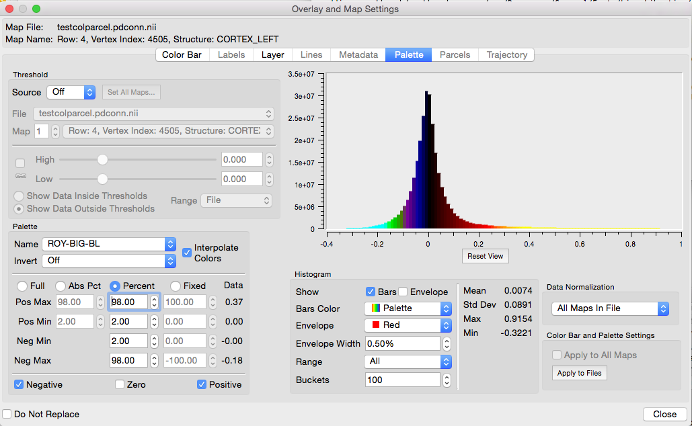

Overlay and Map Settings
Overlay and Map Settings sets display options for layer
data selected in the Overlay Toolbox
Layers tab.
To open these settings, click the  button for a selected layer.
button for a selected layer.
- The box contains
tabs with options for different types of Layers data: Labels,
Layer (volume layer settings), Metadata, Palette,
Parcels, Trajectory. Tabs will be
active (not grayed-out), depending on the data in the File
selected for that layer.
- The Do Not
Replace option at the bottom of the box allows more
than one Settings box to be open at a time. Otherwise, if
settings for another layer is selected the contents of the
box will switch to options for that most recently selected
layer.
- Color Bar contains controls for
the adjustment of color bar attributes. Fine tuning of the
color bar is performed using the annotation editing
features.
- Labels contains an Edit
button used for modifying the color and name of labels in
a *.label or *.dlabel file. Edits are applied within
the session when the Apply or OK buttons are
clicked. The edits are not written to the label file until
saved in Save/Manage
Files.
- Layer contains voxel drawing
settings for files containing volume data. The 3D options to
draw voxels as cubes or rounded cubes are only active in All view.
These options should only be used for files with a
limited number of voxels to draw (*.dscalar files that
contain only subcortical voxels, low resolution volumes, or
highly thresholded higher resolution volumes) because
wb_view attempts to draw all voxels in the volume, causing
the program to hang when large numbers of voxels are
drawn.
- Metadata will allow
creation/editing of map metadata for each layer file. This
option is not active currently.
- Palette (see image) contains
settings for adjusting the type and range of the data color
palette, setting thresholds on displayed data, and shows a
histogram/basic statistics on the data distribution.
- Thresholds set by the sliders
or entered values in the toggle box are shown by the
shading in the histogram and can be applied inside or
outside the set values. The Threshold
Source is one of Off (no thresholding), Self
(threshold using data from displayed map), or File
(allows thresholding using a map from the same or
different file). Range controls the minimum
and maximum values in the threshold controls. Data
Normalization affects the histogram. When
All Maps In File, the histogram contains
data from all maps in the data file. When Selected
Map in File, the histogram contains the selected map.
- Palette spectrum is set for
the Full range of the map data, a Percent
range of the full data, or a Fixed range of the full data
values. Positive, zero, or negative values may be toggled
on/off for display with the checkboxes.
- Mouse
controls for zooming and panning are
active in the histogram chart field.
- Data
Normalization When Selected Map in File,
the histogram and statistics are calculated using the
data from the only the selected map. When All
Maps in File, the histogram and statistics
are calculated using data from all maps in the file and
results in a particular value "x" to be colored
identically in all maps.
- Color Bar and
Palette Settings The Apply to All Maps
checkbox enables the copying of the settings from the
selected map to all maps in the data file. Apply
to All Files allows the user to copy the current map
settings to other loaded data files.
- Parcels
sets the mode and color for which an identified parcel is
indicated on the surface. Color Mode: Outline
indicates the selected parcel's boundary with a highlight
color, Fill shows the entire selected parcel with
the highlight color, and Off turns off the parcel
indication altogether.
- Trajectory
sets Attributes, Display Mode, and Data Mapping for
display of tractography trajectory files. This tab is
currently inactive pending the release of tractography
data.
